| Anhang der Arbeitsstättenverordnung Nr. 6.1 Ziffer 5 und 6 |
|
| (5) | Die Arbeitstische oder Arbeitsflächen müssen eine reflexionsarme Oberfläche haben und so aufgestellt werden, dass die Oberflächen bei der Arbeit frei von störenden Reflexionen und Blendungen sind. |
| (6) | Die Arbeitsflächen sind entsprechend der Arbeitsaufgabe so zu bemessen, dass alle Eingabemittel auf der Arbeitsfläche variabel angeordnet werden können und eine flexible Anordnung des Bildschirms, des Schriftguts und der sonstigen Arbeitsmittel möglich ist. Die Arbeitsfläche vor der Tastatur muss ein Auflegen der Handballen ermöglichen. |
Der Arbeitstisch beziehungsweise die Arbeitsfläche ist ein wesentliches Element der sicheren und ergonomischen Arbeitsplatzgestaltung.
Wichtige Kriterien für die Auswahl sind:
Arbeitsflächen sind Oberflächen von Tisch- oder Arbeitsplatten, auf denen Arbeitsmittel abhängig von Arbeitsaufgabe und Arbeitsablauf flexibel angeordnet werden können.
Eine flexible Aufstellung und Zuordnung der Arbeitsmittel ist gewährleistet, wenn Bildschirm, Tastatur, sonstige Eingabemittel, zusätzliche Arbeitsmittel und Schriftgut leicht umgestellt und an jeder Stelle der Arbeitsfläche angeordnet werden können, ohne über diese Fläche hinauszuragen.
Die Zuordnung von Bildschirmen, Eingabemitteln, Arbeitsvorlagen und zusätzlichen Arbeitsmitteln muss entsprechend dem Schwerpunkt der Arbeitsaufgaben erfolgen. Hierbei sind sowohl die visuellen als auch die manuellen Erfordernisse zu berücksichtigen.
Die Arbeitsmittel sind je nach Grad der Benutzung anzuordnen. Häufig Benötigtes sollte möglichst zentral im Blickfeld und Greifraum angeordnet werden, nur gelegentlich Benötigtes dezentral (Abbildung 27).
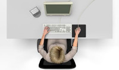 |
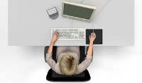 |
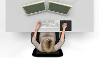 |
Abb. 27 Beispielhafte Anordnung von Bildschirm, Tastatur und Vorlagenhalter
Auf der Arbeitsfläche erstreckt sich im Bereich der zentralen Sehachse der Greifraum für häufig benutzte Arbeitsmittel bis zu einer Tiefe von 300 mm. Als Auflage für die Handballen vor Eingabemitteln (Tastatur, Maus) ist ein Abstand von 100 mm bis 150 mm von der Vorderkante der Arbeitsfläche vorzusehen (Abbildung 28).
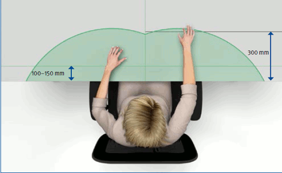
Abb. 28 Greifraum
Als horizontales Blickfeld gilt der Bereich von bis zu 35° beidseitig der zentralen Sehachse. Als vertikales Blickfeld ist der Bereich von der horizontalen Sehachse bis zu 60° nach unten anzusehen (Abbildung 26).
Um eine entspannte Kopfhaltung zu erzielen und visuelle Belastungen zu vermindern, sollte die Blicklinie13 um etwa 35° aus der Waagerechten abgesenkt werden und einen annähernd rechten Winkel mit der Bildschirmoberfläche bilden (Abbildungen 20 und 26).
Die oberste Zeile auf dem Bildschirm soll keinesfalls oberhalb der horizontalen Sehachse liegen.
Die Sehabstände müssen der jeweiligen Sehaufgabe entsprechen und sollen mindestens 500 mm betragen. Dabei sind die Anforderungen für Zeichengröße, -gestalt und Abstände zu erfüllen (siehe Abschnitt 8.2.1). Um belastende Akkommodationsvorgänge zu vermeiden, sind bei Arbeiten, die häufige Blickwechsel zwischen Arbeitsmitteln erfordern, möglichst einheitliche Sehabstände einzuhalten.
Bei Bildschirmen mit größeren Anzeigeflächen – zum Beispiel CRT mit Diagonalen ab 19", LCD mit Diagonalen ab 17" – oder beim gleichzeitigen Einsatz von mehreren Bildschirmen können bei entsprechenden Zeichengrößen Sehabstände bis 800 mm erforderlich sein.
Der Arbeitstisch muss so gestaltet sein, dass ein Verletzungsrisiko für den Benutzer oder auch für Dritte minimiert ist. Die bestimmungsgemäße und die nach vernünftigem Ermessen vorhersehbare Verwendung sind dabei zu berücksichtigen.
Dies ist gegeben, wenn die Anforderungen hinsichtlich
eingehalten sind.
Die Standsicherheit von Arbeitstischen ist gegeben, wenn sie bei einer vertikalen Belastung der Arbeitsflächenkante mit 750 N nicht kippen. Die möglichen Tisch- beziehungsweise Arbeitsflächeneinstellungen sind dabei zu berücksichtigen – zum Beispiel bei einer verschiebbaren Arbeitsfläche die Rastposition. Das Tischgestell darf keine Stolperstellen bilden.
Steharbeitstische beziehungsweise Stehpulte dürfen nicht kippen, wenn sie vertikal mit 250 N, aufgebracht in 50 mm Abstand von der Arbeitsflächenkante, belastet werden. Gleichzeitig ist eine horizontale Kraft von 25 N aufzubringen.
Die Stabilität von Arbeitstischen beinhaltet ausreichende Festigkeit, Dauerhaltbarkeit, Steifigkeit und Vermeidung störender Schwingungen.
Festigkeit und Dauerhaltbarkeit sind gegeben, wenn Belastungen – zum Beispiel durch Körpergewicht – bei Benutzung oder durch Verschieben und Transport nicht zu Beschädigungen führen. Dabei müssen Kräfte bis zu 1000 N sicher aufgenommen werden.
Ein Mangel an Steifigkeit kann zum Beispiel durch Anstoßen bei manuellen Schreibarbeiten oder dem Einsatz von Druckern zu störenden Schwingungen führen. Dabei dürfen die horizontalen Auslenkungen in definierter Sitz- oder Stehhöhe 5 mm beziehungsweise 8 mm nicht überschreiten. Größere Auslenkungen können zum Teil durch ein gutes Dämpfungsvermögen des Tisches kompensiert werden.
Quetsch- und Scherstellen für Finger durch bewegliche Teile werden vermieden, wenn zugängliche Zwischenräume in jeder Position während der Bewegung entweder ≤ 4 mm oder ≥ 25 mm sind. Bei geringeren Gefährdungen (z.B. reduzierte Kräfte und langsame Bewegungen) darf das untere Maß auch ≤ 8 mm sein, wenn geprüft wurde, ob zusätzliche gestalterische Maßnahmen oder Abdeckungen notwendig sind.
Bei neigbaren Arbeitsflächen soll die Neigung nicht größer als 8° sein, um ein Rutschen der Arbeitsmittel zu verhindern.
Um Gefährdungen des Benutzers durch Stolpern über freiliegende elektrische Leitungen und Leitungsschleifen zu vermeiden, sind vertikale und horizontale Installationskanäle erforderlich (siehe auch Abschnitt 8.3.5).
Arbeitsflächen müssen für den Gebrauch ausreichend kratz- und abriebfest sowie beständig gegen Zigarettenglut und chemische Einflüsse sein. Reflexionsgrade (Helligkeit) müssen im Bereich von 0,15 bis 0,75 liegen. Bei Glanzgraden (Spiegelung) ist maximal seidenmatt oder ein 60°-Reflektometerwert bis 20 zulässig.
Bei Tischen mit besonderen Ausstattungsmerkmalen – zum Beispiel verschiebbare Arbeitsfläche, Höhenverstellung, Freiformflächen – müssen Benutzerinformationen vorliegen.
Die folgenden Faktoren haben wesentlichen Einfluss auf die Gestaltung ergonomischer Arbeitstische:
Höhe
Unter Berücksichtigung der Verstellmöglichkeiten des Arbeitstisches/der -fläche sollte die Arbeitshöhe an die unterschiedlichen Körpermaße des Menschen und die Arbeitsaufgabe sowohl im Sitzen als auch im Stehen angepasst werden können (Abbildung 29). Die Arbeitsflächenhöhe hat einen wesentlichen Einfluss auf die Körperhaltung.
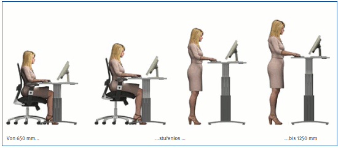
Abb. 29 Sitz-/Steharbeitstisch
Es können unterschiedliche Tischsysteme (Abbildung 30) eingesetzt werden, mit:
| Tischsysteme | ||
| Körperhaltung | Höhe | Kriterien |
| Sitzend/Stehend | ||
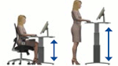 |
Verstellbar | Gut anpassbar und bewegungsfördernd für wechselnde Benutzer und Körperhaltungen |
| Sitzend | ||
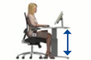 |
Verstellbar | Gut anpassbar für wechselnde Benutzer |
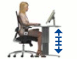 |
Einstellbar | Gut anpassbar für einen Benutzer |
| Fest | Bedingt anpassbar, ausschließlich über Stuhl; individuell nur durch Hilfsmittel – zum Beispiel Fußstützen |
|
| Stehend | ||
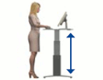 |
Verstellbar | Gut anpassbar für wechselnde Benutzer |
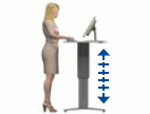 |
Einstellbar | Gut anpassbar für einen Benutzer |
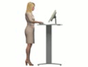 |
Fest | Nicht anpassbar |
| Neben der benutzerbezogenen ist gegebenenfalls eine zusätzliche aufgabenbezogene Anpassung erforderlich. | ||
Abb. 30 Tischsysteme
Höhenverstellbare Arbeitsflächen, die sich sowohl im Sitzen als auch im Stehen nutzen lassen, wirken sich günstig auf den Bewegungsapparat des Menschen aus, wenn durch die Bereitschaft zur Nutzung der Höhenverstellung die Sitz-Steh-Dynamik gefördert wird.
Die Höhenverstellung von Arbeitsflächen kann zum Beispiel mittels Seilzug, Kurbeltrieb, Gasfeder, elektromotorischer Antriebe oder auch deren Kombination erfolgen. Der Verstellmechanismus muss sich auch unter Belastung leichtgängig und sicher betätigen lassen.
Unter Berücksichtigung der zum Teil miteinander in Konflikt stehenden Anforderungen der Körpermaße und Körperhaltungen, der mechanischen Konstruktion, der verwendeten Arbeitsmittel und anderer Faktoren sind Mindestanforderungen für Abmessungen und Verstellbereiche festgelegt. Eine ausreichende Bewegungsfreiheit ist für den Menschen gegeben, wenn die Mindestanforderungen eingehalten sind.
Entspannte und ermüdungsfreie Körperhaltungen bei guter Bewegungsfreiheit – ohne Benutzung einer Fußstütze – werden insbesondere für kleine und große Benutzer gefördert, wenn die Empfehlungen für Abmessungen und Verstellbereiche erreicht werden (Tabelle 10).
| Arbeitsflächenmaße | ||||||
| Arbeitsfläche (mm) | Arbeitsflächenhöhe (mm) | |||||
| Vollständig höhenverstellbar | Fest | |||||
| Breite | Tiefe | Sitzende | Stehende | Sitzende und stehende |
Sitzende | Stehende |
| Tätigkeit | ||||||
| Mindestanforderungen | ||||||
| 1200*, 1600 | 800 | 650–850 | 950–1250 | 650–1250 | 740 ± 20 | 1050 ± 20 |
| Ergonomische Empfehlungen | ||||||
| 1800 | 900, 1000 | < 620–850 | 950–1250 | < 620–1250 | – | – |
* für Arbeitsplätze mit nur einem Bildschirmgerät, Schriftgut nur in geringem Umfang, ohne wechselnde TätigkeitenBreiten von 1200 mm können zum Beispiel durch tischhohe Bürocontainer auf das Mindestmaß von 1600 mm Breite ergänzt werden. Die Maße der Arbeitsfläche sollten in Breite und Tiefe ein Vielfaches von 100 mm betragen. |
||||||
Tabelle 10
Alle in DIN EN 527-1 "Büromöbel – Büro-Arbeitstische; Maße" enthaltenen Tischtypen, also z. B. auch eingeschränkt höheneinstellbare und höhenverstellbare sowie vollständig höheneinstellbare Tische können zwar ein GS-Zeichen bekommen, werden aber wegen ergonomischer Nachteile im vorliegenden Leitfaden nicht behandelt.
Breite und Tiefe
Die Arbeitsfläche ist Aufstell- und Ablagefläche für Arbeitsmittel – zum Beispiel Bildschirm, Tastatur – und Arbeitsmaterialien – zum Beispiel Schriftgut. Zusätzlich muss sie einen ausreichenden Freiraum zur Auflage für Hände und Arme des Benutzers bieten und ihm Haltungswechsel ermöglichen.
Die Tiefe der Arbeitsfläche ist abhängig von den erforderlichen Sehabständen, der Hand-/Armauflage, den Bautiefen der eingesetzten Geräte sowie dem Bein- und Fußraum.
Ausreichend groß ist eine Arbeitsfläche, wenn ihre Maße mindestens 1600 mm x 800 mm (Breite x Tiefe) betragen (Abbildung 31). Größere Arbeitsflächen sind besonders bei Arbeitsaufgaben und Arbeitsabläufen mit wechselnden Tätigkeiten sowie bei zusätzlichen Arbeitsmitteln erforderlich.
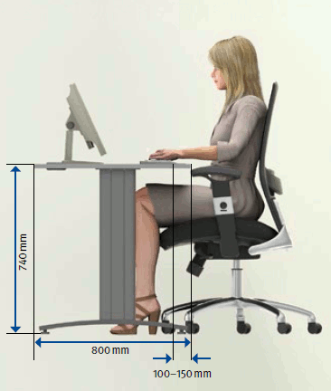
Abb. 31 Zusammenhang Bildschirmtiefe/ Arbeitsflächentiefe
An Arbeitsplätzen, die nur mit einem Bildschirmgerät ausgerüstet sind, an denen Schriftgut nur in geringem Umfang verwendet wird und an denen keine wechselnden Tätigkeiten ausgeübt werden, kann ausnahmsweise die Arbeitsflächenbreite von 1600 mm bis auf 1200 mm verringert werden. Die nutzbare Arbeitsfläche muss mindestens 0,96 m2 betragen.
Flächenformen
Unter Beachtung der Mindestabmessungen sowie der erforderlichen Bein- und Fußräume sind Arbeitsflächenkombinationen und vom Rechteck abweichende Flächen (Freiformflächen) möglich (Abbildung 32).
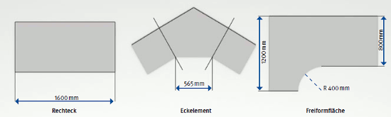
Abb. 32 Arbeitsflächenformen
Bei Arbeitsflächenkombinationen darf die Gesamtarbeitsfläche nicht kleiner als 1,28 m2 sein und an keiner Stelle eine geringere Tiefe als 800 mm aufweisen. Dabei ist mindestens eine ungeteilte Arbeitsfläche von 800 mm Breite vorzusehen. Wird unter der ungeteilten Arbeitsfläche zum Beispiel ein Bürocontainer angeordnet, so ist die erforderliche Mindestbeinraumbreite zu gewährleisten.
Im Eckbereich von Verkettungen kann die Breite der Arbeitsfläche an der Arbeitskante auf bis zu 565 mm verringert werden.
Bei der Auswahl und beim Einsatz von Freiformflächen sind in Abhängigkeit von den vorgesehenen Tätigkeiten die Anordnung der Arbeitsmittel und die einzunehmenden Arbeitspositionen zu berücksichtigen. Um eine ausreichende Bewegungsfreiheit für den Benutzer zu gewährleisten, muss bei geschwungenen Arbeitskanten der konkave Radius mindestens 400 mm betragen. Er darf maximal als Viertelkreis ausgeführt werden.
Bein- und Fußraum
Um dem Benutzer ausreichende Möglichkeiten für Haltungswechsel zu bieten, ist unterhalb der Arbeitsfläche ein entsprechender Bein- und Fußraum in Breite, Tiefe und Höhe erforderlich (Abbildung 33).
Die Bein- und Fußraumbreite muss sich bei unterschiedlichen Arbeitsaufgaben an den Bewegungsabläufen des Benutzers orientieren, das heißt sie sollte über die gesamte Arbeitskantenbreite vorhanden sein und nicht durch Unterbauten oder Stützelemente einschließlich ihrer Fußausleger eingeschränkt werden. Dies gilt auch für Arbeitsflächenkombinationen und Freiformflächen.
Die Beinraumbreite darf 850 mm nicht unterschreiten. Beinraumbreiten von 1200 mm und mehr werden empfohlen, da hier vielfältige Haltungswechsel in der Sitzposition möglich sind, insbesondere wenn mehrere Arbeitszonen auf der Arbeitsfläche vorhanden sind.
Bei Arbeitstischen mit einer vollständig höhenverstellbaren Arbeitsfläche ist eine bessere Anpassung an kleine Benutzer (5. Perzentil) und große Benutzer (95. Perzentil) gegeben als bei anderen Tischen. Diese Tische weisen aufgrund anderer Maßvorgaben in DIN EN 527-1 größere Beinräume auf.
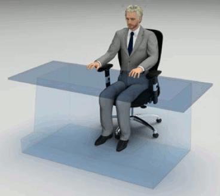
Abb. 33 Bein- und Fußraum
Auch bei Arbeitsflächenkombinationen und Freiformflächen müssen Bein- und Fußräume für die verschiedenen Arbeitspositionen frei bleiben. Stützelemente müssen sichtbar oder so platziert werden, dass ein Verletzungsrisiko minimiert ist. Sie müssen entweder weniger als 100 mm oder mehr als 450 mm von der Arbeitskante zurückgesetzt sein.
An Steharbeitsplätzen muss ein Fußraum von mindestens 790 mm Breite, 150 mm Tiefe und 120 mm Höhe vorhanden sein. Eine Kniefreiheit von 80 mm Tiefe ist bis zu einer Höhe von 700 mm erforderlich.
Weitere Literatur
|